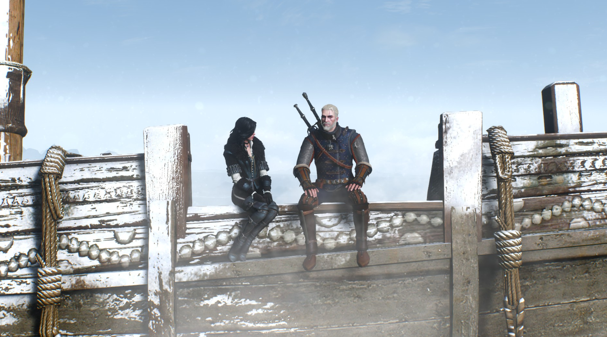

The Witcher 3: The Wild Hunt
The Witcher 3: Wild Hunt is the third and final installment in the series of games developed by CD PROJEKT RED featuring the witcher Geralt of Rivia. The game was originally scheduled for release in late 2014, then pushed back to 24 February 2015, and finally released on 19 May 2015.
